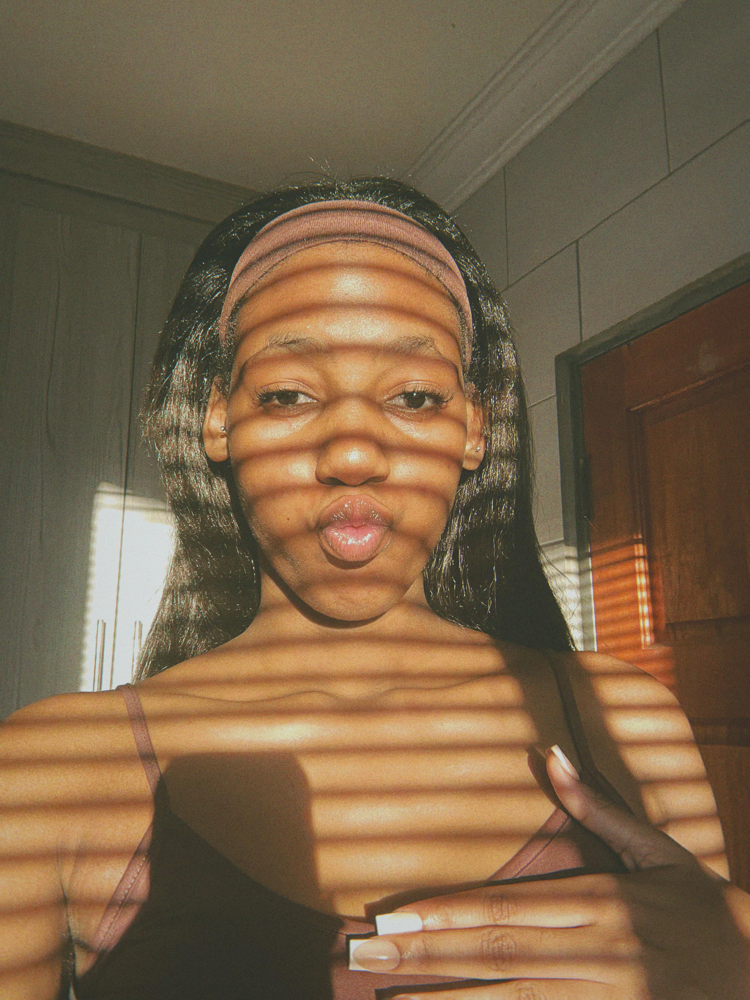
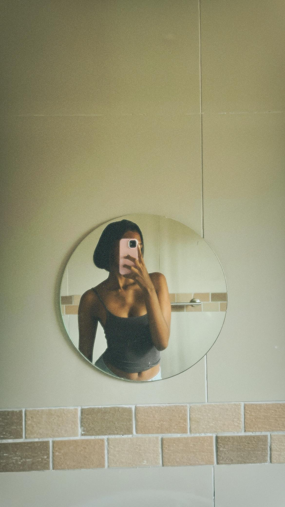

It all started on Good Friday, April 3rd, 2026 — a day I thought would just be about church and responsibilities.
I was working at the gate when I first saw her. I didn’t speak to her then, but I remember noticing her immediately — something about her just stood out. Later, I went to her brother, Juju, and casually told him that one of his cousins was my type. I didn’t think much of it at the time, and I went back to my church duties like normal.
Not long after, she came up to me with her sister. From the start, she was bold — asking me a lot of questions, trying to get to know me. I was a bit caught off guard, but it felt natural talking to her.
Then came the moment that confused me — she somehow got makeup on my shirt. I remember thinking, “Okay… why would you do that?” It felt suspicious, but also kind of funny looking back.
As the day went on, we ended up spending most of it together. At some point, we were walking around picking up trash, and surprisingly, that became one of my favorite parts of the day. The conversations just flowed.
Then her stubborn side came out — she refused to wear her sandals because she said her feet were tired. So there I was, walking around carrying her sandals for her. And honestly, I didn’t even mind.
The funny thing is, I wasn’t looking for a relationship at all. I had already decided I wasn’t interested in anything like that. But somehow, she found me in that exact space and slowly opened my heart again.
What I thought would be just another Good Friday turned into the beginning of something I didn’t expect — something real.

